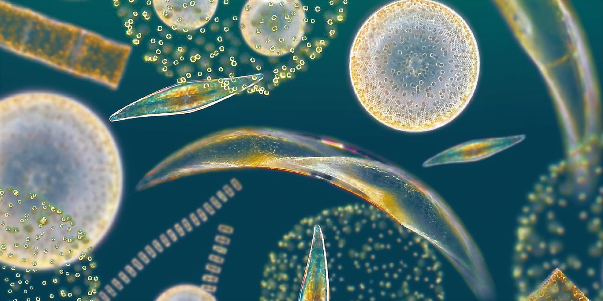
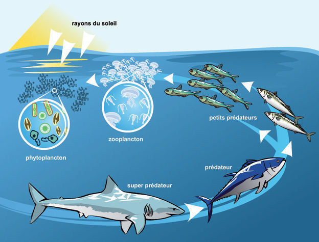

Tu es la première source d'énergie du
phytoplancton. Ces organismes microscopiques qui dérivent à la surface de l'océan, emportés par les grands courants océaniques, réalisent la
photosynthèse. Ils assemblent des molécules de dioxyde de carbone (CO2) en plus longues chaînes carbonées grâce à l'énergie lumineuse.
Cette réaction se produit dans les chloroplastes, de petites structures cellulaires gorgées de
chlorophylle, un pigment vert qui absorbe les rayons du soleil et en tire de l'énergie. C'est pourquoi le plancton, les algues, et toutes les plantes terrestres qui réalisent la photosynthèse ont cette belle couleur verte.
Dans les chloroplastes : 6 molécules de CO2 + 6 molécules d'eau -> une molécule de sucre (matière carbonée) + 6 molécules d'O2 (dioxygène)

Les organismes photosynthétiques ne mangent pas, mais ils se font manger. On dit qu'ils sont à la base de la chaîne alimentaire. La photosynthèse remplace leur repas : le CO2 inspiré leur permet de fabriquer la matière carbonée à partir de laquelle se construit le monde vivant. Ensuite, le plancton sera mangé par les baleines et par tous les petits poissons qui seront ensuite mangés par des poissons de plus en plus gros : des sardines, des maquereaux, des saumons, de gros thons... Sans plancton, pas de vie dans l'océan.
Mais le plancton a un autre rôle primordial pour tous les autres vivants : il libère de l'oxygène en réalisant la photosynthèse. Certains scientifiques estiment que
la moitié de l'oxygène que nous respirons a été produite par le plancton. Disons que la moitié de l'oxygène dans l'atmosphère s'y est accumulée au fil des années grâce à lui.
Alors voilà : sans plancton, pas de vie dans l'océan... ni sur terre.
Le plancton est à la source de la vie. Oui, sauf qu'aujourd'hui il est menacé par les vagues de chaleur à répétition. Plus l'océan se réchauffe en surface, plus il est
stratifié : les eaux chaudes peu denses recouvrent les eaux froides plus denses si bien que tout est à l'équilibre. La circulation océanique ralentit. Les nutriments déposés sur le fond de l'océan ne sont plus ramenés en surface où vit le plancton. Il a trop chaud, il respire mal, il manque de phosphore, de fer ou de nitrate...